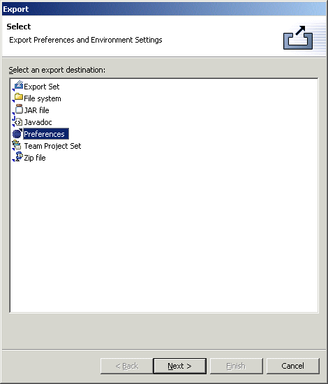
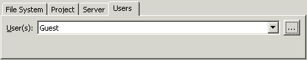

Export Preferences

Migrating from one IDE version to another is inconvenient due to the difficulty in moving general workspace preferences from one version to another. Likewise, configuring multiple user's workspaces with common settings (such as code formatting preference, classpath variable settings, etc.) is also very difficult.
CodePro makes it easy for users to copy workspace preferences in any granularity between multiple workspaces. It also makes it easy for team leaders and administrators to set up common sets of preferences for configuring multiple workspaces.
Key advantages relative to the simple preference import/export mechanism in base Eclipse are:
- Much better control over the granularity of exported preferences.
This makes it easy, for example, to share just your code formatter
preferences with other team members without forcing them to take the
rest of your preferences as well.
- Better handling of many preferences like classpath variables. The
Eclipse preference exporter exports classpath variables using hard coded
paths which makes them pretty useless when imported into another
workspace or on another machine. The CPS preference exporter will
export them in a workspace-relative format that makes them useable in
multiple workspaces and on multiple developer machines.
- Support for many non-standard preference settings like templates and working sets. These are stored as XML files in your workspace metadata directory and are not visible to the Eclipse preference exporter.
Exporting preferences
To export preferences, open the Export Wizard, select "Preferences" and click "Next". At the top of the wizard is a checkbox tree list showing all of the preferences that may be exported. Each plugin that defines any preferences is listed and may be individually selected. Some plugins define multiple categories of preferences (e.g., the "Java Core" plugin defines both "Classpath Variables" and "Code Formatting" preferences) which also may be individually selected.

Immediately above the checkbox tree is a dropdown list providing quick access to common sets of preferences such as "Java Classpath Variables" or "Java Code Formatting". Selecting one of those items will cause the appropriate checkboxes to be checked. Below the the checkbox tree are two checkboxes controlling some additional export options. The "Include optional settings" checkbox includes some optional categories into the list of available preferences (these tend to be very workspace specific and most appropriate for a single user wishing to move from one release of Application Developer or Eclipse to another). The "Show all plugins" checkbox shows all loaded plugins including those that do not define any exportable preferences.
At the bottom of the wizard page, is an area for selecting the location to which the preference file should be exported. The first option, "File System" allows the user to export the preferences to any arbitrary location in the file system. It defaults to \preferences\preferences.pref (the ".pref" suffix is used for all preference files). The wizard automatically remembers the names of the last eight files that have been exported.
The second option, "Project", allows the user to store the preferences to a project loaded in their workspace. This makes it easy to put the preference file under some form of source code control such as CVS, PVCS or ClearCase. The wizard automatically remembers the last project exported to as well as the last eight files that have been exported.
The third option, "Server", can be used only if a collaboration server has been specified in the preferences. It allows the user to store the preferences on the collaboration server. The wizard automatically remembers the last path used.
The fourth option, "User", likewise can be used only if a collaboration server has been specified in the preferences. It allows the user to send preferences to other users as an attachment to a message; the attachment will be automatically applied upon receipt without intervention by the receiving user. Thus, this option provides a way to silently set preferences in the workbenches of other users. This can only be done for users and groups led by the user, unless the user is the administrator, in which case it can be done for any user or group. The wizard automatically remembers the last users/groups used.

Preference files are stored in standard XML format. The following is an example of what an exported preference file looks like. In this case, only the users classpath variables have been exported. Note that the classpath variables are stored relative to the "eclipse.root", "eclipse.workspace" or "eclipse.drive" as appropriate (system classpath variables such as "JRE_LIB" are not exported). This makes it easy to import these preferences into another workspace that might be installed on a different drive or in a different location relative to the original workspace.